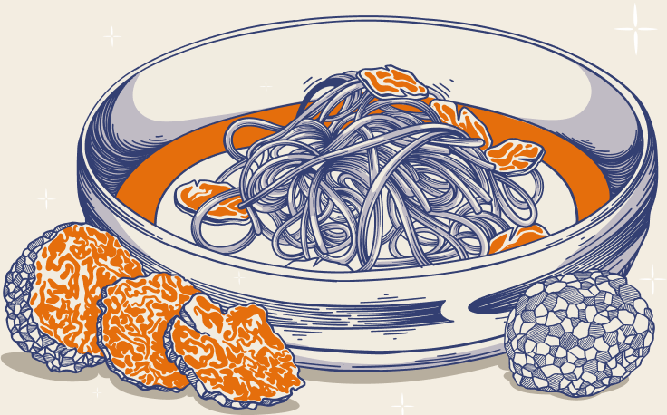

Notre équipe de cuisiniers expérimentés et d'amateurs de cuisine a une profonde appréciation de l'histoire riche et de la signification culturelle de la cuisine japonaise. Nous croyons que l'art de la cuisine japonaise est plus qu'une simple collection de recettes, c'est un mode de vie qui célèbre la beauté et la simplicité des ingrédients naturels, la joie de la cuisine collective et l'harmonie entre la nourriture et la nature.
